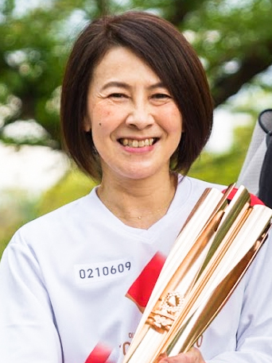
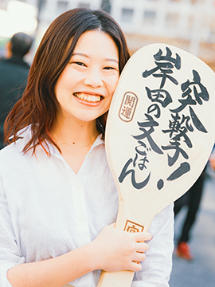
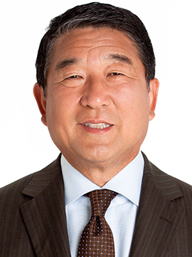

プログラム
本学術集会は、従来の現地開催型と一部プログラムのオンデマンド配信を併用した、ハイブリッド型での開催となります。
会期当日のLIVE配信は行いません。現地参加いただいた場合も、後日オンデマンド配信の視聴が可能です。
オンデマンド配信対象プログラムについては、本ページをスクロールしてオンデマンド配信 表記をご確認ください。
- オンデマンド配信期間：2021年12月23日（木）～2022年1月19日（火）（予定）
日程表
プログラム
主催プログラム
会長講演
12月10日（金）10:30～11:00オンデマンド配信
医療人としてチャレンジしてきた患者の幸せの探求
| 座長： | 寺師 浩人 | （神戸大学医学部附属病院 形成外科） |
| 演者： | 溝上 祐子 | （公益社団法人日本看護協会 看護研修学校 認定看護師教育課程） |
理事長講演
12月10日（金）14:00～14:30オンデマンド配信
日本フットケア・足病医学会のこれから
| 座長： | 溝上 祐子 | （公益社団法人日本看護協会 看護研修学校 認定看護師教育課程） |
| 演者： | 寺師 浩人 | （神戸大学医学部附属病院 形成外科） |
特別講演
特別講演1
12月10日（金）11:00～12:10オンデマンド配信
車イスになったママがキラキラ生きれる社会を私が作る！
| 演者： | 岸田 ひろ実 | （カウンセラー） |
| 岸田 奈美 | （作家） |
岸田 ひろ実

長女と知的障害のある長男を育てる中、2005年に夫が心筋梗塞により突然死し、2008年に自身も大動脈解離により下半身麻痺となる。
2011年株式会社ミライロに入社し、講師として年間180回以上の講演を行う。2014年世界的スピーチコンテスト「TEDx」に登壇。
2021年にミライロを退職後は、カウンセラーやコーチングのプロフェッショナルとして、ひとりひとりの心に寄り添う。
著書に『ママ、死にたいなら死んでもいいよ』（致知出版社）。
岸田 奈美

1991年生まれ、兵庫県神戸市出身、関西学院大学人間福祉学部社会起業学科2014年卒。
在学中に株式会社ミライロの創業メンバーとして加入、10年に渡り広報部長を務めたのち、作家として独立。
世界経済フォーラム（ダボス会議）グローバルシェイパーズ。 Forbes 「30 UNDER 30 JAPAN 2020」「30 UNDER 30 Asia 2021」選出。
特別講演2
12月11日（土）13:10～14:10オンデマンド配信
マイク・アラカルト 行き当たりばったり

| 座長： | 中村 正人 | （東邦大学医療センター大橋病院 循環器内科） |
| 演者： | 徳光 和夫 |
教育講演
教育講演1
12月10日（金）9:00～9:30
足の画像診断～足の治療に役立つ単純X線の診かた～
| 座長： | 松村 一 | （東京医科大学 形成外科学分野） |
| 演者： | 菊池 恭太 | （下北沢病院 足病総合センター） |
教育講演2
12月10日（金）9:35～10:05
下肢病変に対する予防的治療のアップデート
| 座長： | 河原田 修身 | （阪和記念病院 循環器内科） |
| 演者： | 綾部 忍 | （八尾徳洲会総合病院 形成外科） |
教育講演3
12月10日（金）10:10～10:40
再生医療でどこまでできる下肢救済！
| 座長： | 佐藤 勝彦 | （医療法人札幌ハートセンター 札幌心臓血管クリニック 循環器内科） |
| 演者： | 田中 里佳 | （順天堂大学 再生医学／形成外科） |
教育講演4
12月10日（金）11:10 ～11:40オンデマンド配信
重症下肢虚血患者に対しての緩和ケア
| 座長： | 熊田 佳孝 | （松波総合病院 心臓血管外科センター） |
| 演者： | 大石 醒悟 | （兵庫県立姫路循環器病センター 循環器内科） |
教育講演5
12月10日（金）11:10 ～11:40
足の治療に必要な解剖とバイオメカニクス
| 座長： | 門野 邦彦 | （南和広域医療企業団 五條病院 整形外科） |
| 演者： | 菊池 恭太 | （下北沢病院 足病総合センター） |
教育講演6
12月10日（金）11:10 ～11:40
透析患者の末梢動脈疾患
| 座長： | 日髙 寿美 | （湘南鎌倉総合病院 腎臓病総合医療センター） |
| 演者： | 石岡 邦啓 | （湘南鎌倉総合病院 腎臓病総合医療センター） |
教育講演7
12月10日（金）14:00 ～14:30オンデマンド配信
CLTIの診断・評価 ―WIFI分類とは―
| 座長： | 緒方 信彦 | （医療法人社団愛友会上尾中央総合病院 循環器内科） |
| 演者： | 東 信良 | （旭川医科大学外科学講座血管・呼吸・腫瘍病態外科学分野） |
教育講演8
12月10日（金）14:00 ～14:30
足の創傷治療に必要な軟膏の基礎知識
| 座長： | 松村 一 | （東京医科大学 形成外科学分野） |
| 演者： | 久道 勝也 | （医療法人社団青泉会 下北沢病院） |
教育講演9
12月10日（金）14:00 ～14:30
糖尿病と足の感染
| 座長： | 上月 正博 | （東北大学大学院医学系研究科 内部障害学分野） |
| 演者： | 嶋崎 鉄兵 | （杏林大学医学部 感染症科） |
教育講演10
12月10日（金）14:40 ～15:10オンデマンド配信
包括的高度慢性下肢虚血に対する血行再建の最新の話題
| 座長： | 土田 博光 | （誠潤会水戸病院 心臓血管外科） |
| 演者： | 仲間 達也 | （東京ベイ・浦安市川医療センター 循環器内科） |
教育講演11
12月10日（金）14:40 ～15:10
糖尿病患者の足をみる最初の一歩
| 座長： | 家城 恭彦 | （富山市立富山市民病院 内分泌代謝内科） |
| 演者： | 富田 益臣 | （下北沢病院 糖尿病センター／足病センター） |
教育講演12
12月10日（金）14:40 ～15:10
認知症のBPSDにフットケアは有効か
| 座長： | 大桑 麻由美 | （金沢大学医薬保健研究域保健学系臨床実践看護学講座） |
| 演者： | 間宮 直子 | （大阪府済生会吹田病院 看護部） |
教育講演13
12月10日（金）16:00～16:30オンデマンド配信
爪のケア最前線
| 座長： | 佐藤 友保 | （土谷総合病院 放射線科） |
| 演者： | 中西 健史 | （明治国際医療大学 皮膚科） |
教育講演14
12月11日（土）9:30～10:00オンデマンド配信
リンパ浮腫: ミクロとマクロの世界
| 座長： | 古川 雅英 | （大分岡病院 創傷ケアセンター 形成外科） |
| 演者： | 大西 文夫 | （埼玉医科大学総合医療センター 形成外科） |
教育講演15
12月11日（土）10:20 ～10:50オンデマンド配信
糖尿病の運動療法
| 座長： | 瀬戸 奈津子 | （関西医科大学 看護学部・看護学研究科） |
| 演者： | 河合 俊英 | （東京都済生会中央病院 糖尿病・内分泌内科） |
教育講演16
12月11日（土）11:00 ～11:30オンデマンド配信
CLTI 診断、治療後、経過における血流評価
| 座長： | 中村 正人 | （東邦大学医療センター大橋病院 循環器内科） |
| 演者： | 宇都宮 誠 | （TOWN訪問診療所城南、東邦大学医療センター大橋病院） |
教育講演17
12月11日（土）10:40 ～11:10
透析クリニックを併設する急性期病院でのフットケアのとりくみ
～フットケア外来開設から運営まで～
| 座長： | 松岡 美木 | （埼玉医科大学病院 褥瘡対策管理室） |
| 演者： | 能登 千惠 | （医療法人秀和会 秀和総合病院 看護部） |
教育講演18
12月11日（土）13:10 ～13:40オンデマンド配信
病院と在宅の創傷治療―その違いと使い分け―
| 座長： | 木下 幹雄 | （TOWN訪問診療所） |
| 演者： | 藤井 美樹 | （順天堂大学医学部 形成外科講座/大学院医学研究科再生医学） |
教育講演19
12月11日（土）13:10 ～13:40
足を守るための血流をみるコツ
| 座長： | 小笠原 祐子 | （和洋女子大学 看護学部 看護学科） |
| 演者： | 仲村 直子 | （神戸市立医療センター中央市民病院 看護部） |
シンポジウム
シンポジウム1
12月10日（金）9:00～10:30オンデマンド配信
病院と地域で取り組むフットケア診療
| 座長： | 大浦 紀彦 | （杏林大学医学部 形成外科） |
| 演者： | 関山 琢也 | （東京西徳洲会病院 形成外科） |
| 木下 幹雄 | （医療法人社団 心愛会 TOWN訪問診療所 形成外科） | |
| 内藤 亜由美 | （東京医療保健大学 立川看護学部看護学科） | |
| 藤森 一史 | （TOWN訪問診療所 三鷹） | |
| 松本 純一 | （TOWN訪問診療所） |
シンポジウム2
12月10日（金）9:00～10:30オンデマンド配信
ガイドラインセッションー足病重症化予防ガイドラインのハイライトー
| 座長： | 東 信良 | （旭川医科大学外科学講座血管・呼吸・腫瘍病態外科学分野） |
| 池田 清子 | （神戸市看護大学 療養生活看護学領域 慢性病看護学分野） | |
| 演者： | 東 信良 | （旭川医科大学外科学講座血管・呼吸・腫瘍病態外科学分野） |
| 藤井 美樹 | （順天堂大学医学部 形成外科講座/大学院医学研究科再生医学） | |
| 孟 真 | （横浜南共済病院 心臓血管外科・横浜市立大学医学部） | |
| 守矢 英和 | （湘南鎌倉総合病院 腎臓病総合医療センター） | |
| 藤本 悠 | （関西医科大学看護学部・看護学研究科） | |
| 田中 康仁 | （奈良県立医科大学 整形外科学教室） | |
| 寺部 雄太 | （春日部中央総合病院 下肢救済センター） | |
| 北野 育郎 | （新須磨病院 外科・創傷治療センター） |
シンポジウム3
12月10日（金）9:00～10:30
透析患者の足病診療〜いかにして足を守り患者を守るか
| 座長： | 田中 啓之 | （国家公務員共済組合連合会横須賀共済病院 腎臓内科） |
| 愛甲 美穂 | （湘南鎌倉総合病院 血液浄化センター） | |
| 演者： | 真栄里 恭子 | （東京西徳州会病院 腎臓内科） |
| 西村 彰紀 | （湘南鎌倉総合病院 リハビリテーション科） | |
| 高梨 未央 | （東京都済生会中央病院 看護部） | |
| 宮下 裕介 | （長野赤十字病院 循環器内科） | |
| 大竹 剛靖 | （湘南鎌倉総合病院 再生医療科） |
シンポジウム4
12月10日（金）14:40 ～15:40オンデマンド配信
エキスパートの試練に学ぶ
| 座長： | 寺師 浩人 | （神戸大学医学部附属病院 形成外科） |
| 北野 育郎 | （新須磨病院 外科） | |
| 演者： | 門野 邦彦 | （南和広域医療企業団 五條病院 整形外科） |
| 飯田 修 | （関西労災病院 循環器内科） | |
| 上村 哲司 | （佐賀大学医学部 形成外科） | |
| 東 信良 | （旭川医科大学 外科学講座血管・呼吸・腫瘍病態外科学分野） |
シンポジウム5
12月10日（金）16:40 ～18:10オンデマンド配信
ここまで進んだ看護師の役割拡大！下肢救済に専門性を発揮する特定認定看護師
| 座長： | 溝上 祐子 | （公益社団法人日本看護協会 看護研修学校 認定看護師教育課程） |
| 演者： | 松岡 美木 | （埼玉医科大学病院 褥瘡対策管理室） |
| 丹波 光子 | （杏林大学医学部付属病院 看護部） | |
| 山﨑 優介 | （広島市立安佐市民病院 看護部） | |
| 加瀬 昌子 | （地方独立行政法人総合病院国保旭中央病院 看護局スキンケア相談室） |
シンポジウム6：足の外科学会合同シンポジウム
12月10日（金）16:40 ～18:10
足部疾患に対する保存治療～切らずに治るならその方がいいよね～
| 座長： | 井上 敏生 | （福岡歯科大学総合医学講座整形外科学分野） |
| 門野 邦彦 | （南和広域医療企業団 五條病院 整形外科） | |
| 演者： | 青木 孝文 | （順和会山王病院 整形外科） |
| 平野 貴章 | （聖マリアンナ医大 整形外科） | |
| 矢部 裕一朗 | （JCHO東京新宿メディカルセンター リウマチ科） | |
| 内田 俊彦 | （オルソティックソサイエティー） | |
| 松井 智裕 | （済生会奈良病院 整形外科） |
シンポジウム7
12月11日（土）9:00～10:30オンデマンド配信
血行再建における下肢血流評価のgold standardは？
| 座長： | 中村 正人 | （東邦大学医療センター大橋病院 循環器内科） |
| 横井 宏佳 | （福岡山王病院 循環器センター） | |
| 演者： | 鈴木 健之 | （東京都済生会中央病院 循環器内科） |
| 岩﨑 義弘 | （京都桂病院 心臓血管センター） | |
| 宇都宮 誠 | （TOWN訪問診療所城南、東邦大学医療センター大橋病院） | |
| 市橋 成夫 | （奈良県立医科大学 放射線・核医学科） | |
| 木下 幹雄 | （TOWN訪問診療所） | |
| 大浦 紀彦 | （杏林大学医学部 形成外科） |
シンポジウム8
12月11日（土）9:00～10:00
子供の足、靴改革シンポジウム
| 座長： | 大浦 紀彦 | （杏林大学医学部 形成外科） |
| 門野 邦彦 | （南和広域医療企業団 五條病院 整形外科） |
| オープニングリマークス： |
| 寺師 浩人 | （神戸大学大学院医学研究科 形成外科学） |
| 演者： | 塩之谷 香 | （塩之谷整形外科） |
| ベーレ・ルッツ | （株式会社フィートバック） | |
| 伊藤 笑子 | （フラウ合同会社） |
シンポジウム9
12月11日（土）14:10 ～15:40オンデマンド配信
形成外科医による足潰瘍治療
〜瘢痕治癒VS断端形成術VS局所皮弁VS植皮術VS遊離皮弁術〜
| 座長： | 元村 尚嗣 | （大阪市立大学大学院医学研究科 形成外科学） |
| 田中 里佳 | （順天堂大学 医学部形成外科学講座） | |
| 演者： | 辻 依子 | （神戸大学形成外科） |
| 黒川 正人 | （熊本赤十字病院形成外科） | |
| 皿山 泰子 | （神戸労災病院 皮膚科） | |
| 鈴木 沙知 | （静岡赤十字病院形成外科） | |
| 綾部 忍 | （八尾徳洲会病院形成外科） | |
| 石川 昌一 | （埼玉医科大学形成外科） |
パネルディスカッション
パネルディスカッション1：義肢装具士協会合同企画1
12月10日（金）14:00～15:00
これであなたも装具の達人 ～これで分かる装具処方・選択 基礎編～
| 座長： | 菊池 恭太 | （下北沢病院 足病総合センター） |
| 坂井 一浩 | （人間総合科学大学 保健医療学部） | |
| 演者： | 花田 明香 | （富士 足・心臓血管クリニック） |
| 砂田 和幸 | （砂田義肢製作所） |
パネルディスカッション2
12月11日（土）9:00～10:30
在宅・高齢者施設でのフットケア
| 座長： | 間宮 直子 | （大阪府済生会吹田病院 看護部） |
| 樋口 ミキ | （公益社団法人日本看護協会 看護研修学校） | |
| 演者： | 今井 亜希子 | （ひかり在宅クリニック） |
| 齊藤 良子 | （吹田特別養護老人ホーム 高寿園） | |
| 山口 みどり | （公益社団法人日本看護協会 看護研修学校） | |
| 間宮 直子 | （大阪府済生会吹田病院 看護部） |
パネルディスカッション3：義肢装具士協会合同企画2
12月11日（土）10:10 ～11:10
これであなたも装具の達人 ～これで分かる装具処方・選択 応用編～
| 座長： | 元村 尚嗣 | （大阪市立大学大学院医学研究科 形成外科学） |
| 本田 智裕 | （熊本総合医療リハビリテーション学院義肢装具学科） | |
| 演者： | 菊池 恭太 | （下北沢病院 足病総合センター） |
| 上口 茂徳 | （日本フットケアサービス株式会社） |
パネルディスカッション4
12月11日（土）13:00～14:00
バスキュラーnurseの会 hands-on
フットケアにおける血流検査など
～フットケアにおける血流検査の必要性と重要性を私達と一緒に学びませんか？～
| 講師： | 坂田 久美子 | （津みなみクリニック） |
| 溝端 美貴 | （大阪労災病院） | |
| 長田 知香 | （西宮市立中央病院） | |
| 富田 則明 | （松戸脳神経内科） | |
| 越野 理和 | （岐阜ハートセンター） |
| 概要： | ①ドプラ法でのABI測定 |
| ②下肢動脈エコー | |
| ③SPP測定 |
※内容は決まり次第、随時更新します。
事前参加申込
定員に達しましたので、参加受付を終了します。
立見席（見学のみ）をご用意しておりますので、
当日会場にお越しください。
パネルディスカッション5
12月11日（土）15:40～16:40
糖尿病フットケア－特定行為を生かした実践－
| 座長： | 森 小律恵 | （公益社団法人日本看護協会 看護研修学校 認定看護師教育課程 糖尿病看護学科） |
| 丹波 光子 | （杏林大学医学部付属病院 看護部） | |
| 演者： | 髙橋 弥生 | （聖隷佐倉市民病院 看護部） |
| 伊藤 千穂 | （国保直営総合病院 君津中央病院 看護部） | |
| 丹波 光子 | （杏林大学医学部付属病院 看護部） |
フットケア指導士・認定師交流会
12月10日（金）16:40～18:10
認知症がある高齢の血液透析患者の重症下肢虚血による壊疽性潰瘍の看護
| 講師： | 瀬戸 奈津子 | （関西医科大学 看護学部・看護学研究科） |
| 池田 清子 | （神戸市看護大学 看護学部） | |
| 愛甲 美穂 | （湘南鎌倉総合病院 血液浄化センター） |
事前参加申込
参加申込を終了します。
フットケア実践講座
12月11日（土）9:00～11:00
あなたなら、どうする？フットケア
| 講師： | 石橋 理津子 | （佐賀大学医学部付属病院 形成外科 技術補佐員看護師） |
| 愛甲 美穂 | （湘南鎌倉総合病院 血液浄化センター） | |
| 溝端 美貴 | （大阪労災病院 フットケア外来） |
事前申込みは不要です。当日会場にお越しください。
併催プログラム
下肢慢性創傷の予防・リハビリテーション研究会シンポジウム
12月11日（土）16:00～18:00
第一部 退院後の足病患者のリハビリテーションを考える
| 座長： | 古川 雅英 | （大分岡病院） |
| 林 久恵 | （愛知淑徳大学 健康医療科学部） | |
| 演者： | 木下 幹雄 | （TOWN訪問診療所 形成外科） |
| 今岡 信介 | （大分岡病院 看護部） | |
| 松本 純一 | （TOWN訪問診療所） |
第二部 足病患者の大切断後のリハビリテーションと創傷予防
| 座長： | 上月 正博 | （東北大学） |
| 演者： | 長倉 裕二 | （大阪人間科学大学） |
| 名和 大輔 | （日本フットケアサービス） | |
| 辻 依子 | （神戸大学） |
共催：インターリハ株式会社
JET合同企画
12月10日（金）15:30～17:50オンデマンド配信
| 座長： | 宇都宮 誠 | （TOWN訪問診療所城南、東邦大学医療センター大橋病院） |
| 仲間 達也 | （東京ベイ・浦安市川医療センター 循環器内科） |
JET1
| 演者： | 内山 英俊 | （土浦協同病院 血管外科） |
共催：日本ゴア合同会社
JET2
| 演者： | 鈴木 健之 | （東京都済生会中央病院 循環器内科） |
共催：オーバスネイチメディカル株式会社
JET3
| 演者： | 椿本 恵則 | （京都第二赤十字病院 循環器内科） |
共催：ボストン・サイエンティフィック ジャパン株式会社
JET4
| 演者： | 仲間 達也 | （東京ベイ・浦安市川医療センター 循環器内科） |
共催：Cardinal Health Japan 合同会社
JET5
| 演者： | 岩田 曜 | （船橋市立医療センター 循環器内科） |
共催：テルモ株式会社
JET6
| 演者： | 小島 俊輔 | （東京ベイ・浦安市川医療センター 循環器内科） |
共催：株式会社カネカメディックス
JET7
| 演者： | 福永 匡史 | （森之宮病院 循環器内科） |
共催：クックメディカルジャパン合同会社